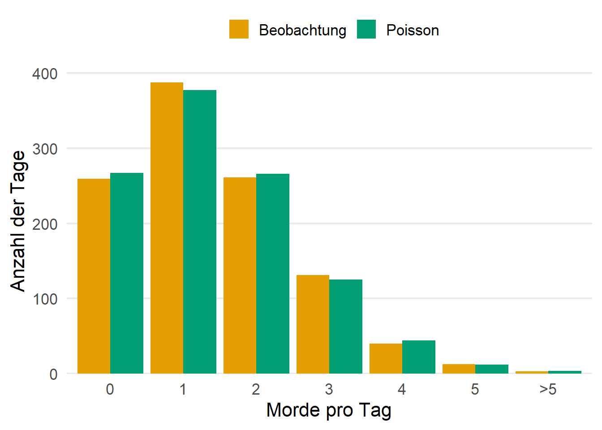
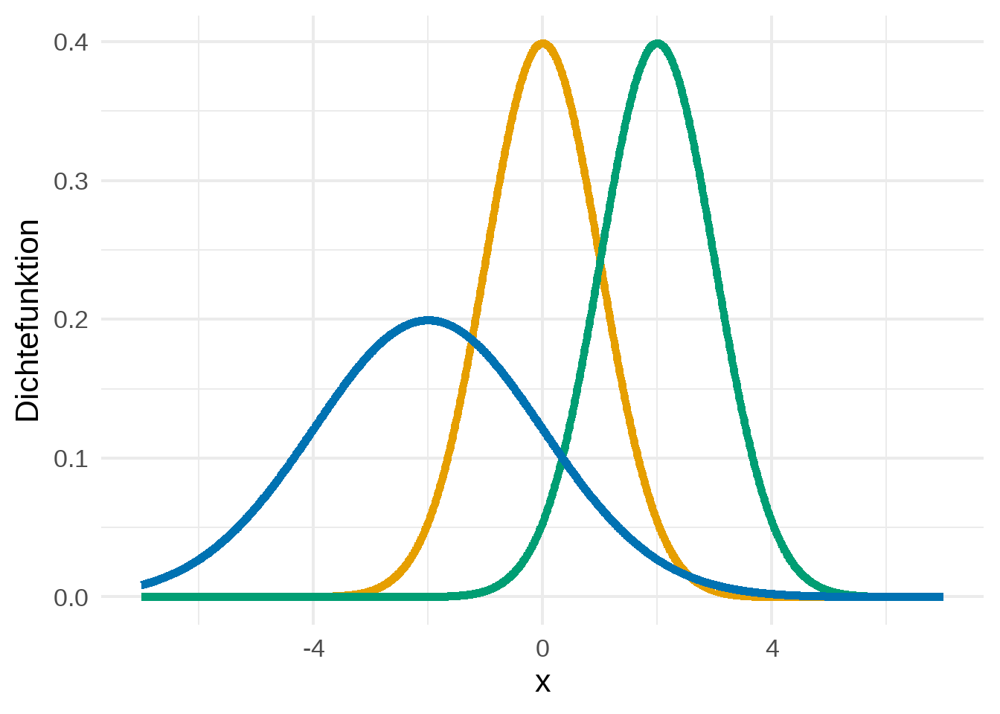
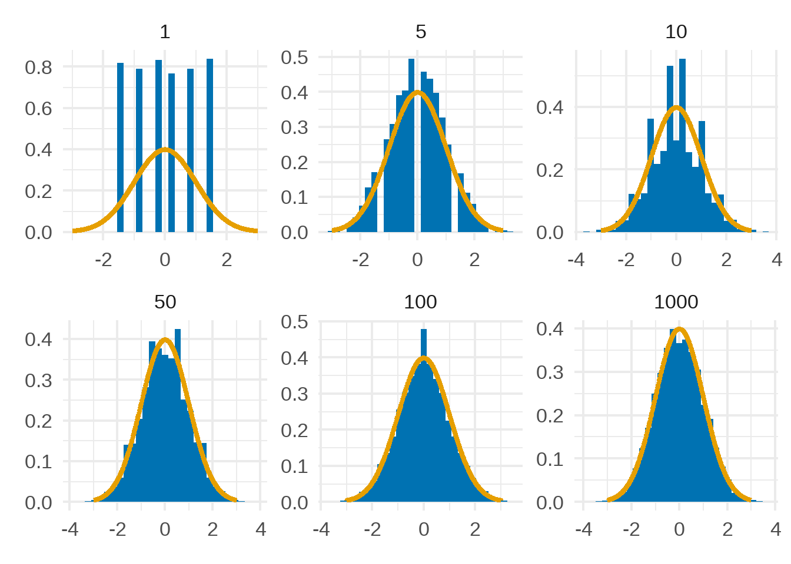

4 Verteilungen
Im letzten Kapitel sind wir darauf eingegangen, dass man Zufallsexperimente mit einer Zufallsvariable und dessen Verteilung zusammenfassen kann. Natürlich eignet sich nicht jede Verteilung, um jedes Zufallsexperiment zu beschreiben. In Beispiel 3.2 wäre es zum Beispiel wenig situationsbezogen gewesen, die Augenzahl eines klassischen Würfel über eine Zufallsvariable \(Y\) mit \(\mathbb{P}(Y = 7) > 0\) oder \(\mathbb{P}(Y = 3{.}5) > 0\) zu beschreiben.
Dementsprechend müssen wir darauf achten, dass der kleinste Wertebereich \(C \subset \mathbb{R}\) einer Zufallsvariable \(X\), sodass \(\mathbb{P}(X \in C) = 1\), zum entsprechenden Zufallsexperiment passt. Insbesondere gibt es gute Gründe, zwischen einem abzählbaren und überabzählbaren Wertebereich \(C\) zu unterscheiden. Ist der Bereich \(C\) abzählbar, so sprechen wir von einer diskreten Zufallsvariable1.
Nach dieser Bezeichnung ist die Zufallsvariable \(R\) aus Beispiel 3.2 eine diskrete Zufallsvariable. Tatsächlich ist \(R\) sogar eine der einfachsten Zufallsvariablen, da sie jedem möglichen Wert \(1, \ldots, 6\) die gleiche Wahrscheinlichkeit zuordnet.
Innerhalb der Klassen der diskreten Zufallsvariablen gibt es allerdings noch eine Vielzahl an weiteren Verteilungen, die unterschiedlich Wahrscheinlichkeiten zulassen. In diesem Kapitel werden wir einige davon kennenlernen. Außerdem werden wir auch die Klasse der absolutstetigen Zufallsvariablen erkunden. Diese führen uns in den Bereich eines überabzählbaren Wertebereichs \(C\).
4.1 Diskrete Zufallsvariablen
Um die unterschiedlichen diskreten Verteilungen kennenzulernen, führen wir den Begriff der Zähldichte ein. Da die Zähldichte auf sehr simple Weise mit der Verteilungsfunktion \(F_X\) einer diskreten Zufallsvariable \(X\) zusammenhängt, charakterisiert auch die Zähldichte die Verteilung von \(X\) eindeutig.
Definition 4.1 (Zähldichte) Es sei \(X\) eine diskrete Zufallsvariable, d.h. es gibt eine abzählbare Menge \(C = \{ x_1, x_2, \ldots \}\), sodass \(\mathbb{P}(X \in C) = 1\) und \(\mathbb{P}(X = x_k) > 0\) für alle \(k \in \mathbb{N}\) bzw. \(k = 1, \dots, N\), falls \(C\) endlich mit \(\vert C \vert = N\). Dann heißt die Funktion \(p(k) = \mathbb{P}(X = x_k)\), \(k \in \mathbb{N}\) bzw. \(k = 1, \ldots, N\), Zähldichte von \(X\).
Beispiel 4.1 (Diskrete Gleichverteilung) Die Zähldichte der diskreten Gleichverteilung auf einer Menge $C = { x_1, , x_N }$ ist gegeben als \(p(k) = \frac{1}{N}\) für alle \(k = 1, \ldots, N\). In Zeichen schreiben wir \(X \sim \text{U}\{ x_1, \ldots, x_N \}\). Für \(C = \{ 1, \ldots, 6 \}\) entspricht diese Verteilung der Verteilung in Beispiel 3.2.
Beispiel 4.2 (Geometrische Verteilung) Die geometrischen Verteilung besitzt die Zähldichte \(p(k) = p(1-p)^{k-1}\) für alle \(k \in \mathbb{N}\), wobei \(p \in [0,1]\). Diese Verteilung beschreibt die Anzahl der unabhängigen Versuche eines Zufallsexperiments bis zum ersten “Erfolg’’. Wichtig dabei ist, dass jeder Versuch des Experiments unter gleichbleibenden Bedingungen stattfindendet.
Nehmen wir an, dass ein Paar versucht, ein Mädchen zu bekommen. Außerdem ist es für dieses Paar scheinbar logistisch2 möglich so lange Kinder zu kriegen, bis es ein Mädchen bekommt. Wir interessieren uns nun für die Fragestellung, wie wahrscheinlich es ist, dass das Paar genau 3 Jungs bekommt, bevor das erste Mädchen geboren wurde und modellieren dies mit einer geometrischen Verteilung.
Es sei also \(X\) die Anzahl der Kinder des Paares nachdem es aufhört, Kinder zu bekommen. Dann gilt \(X \sim \text{Geo}(p)\) und wir berechnen die gesuchte Wahrscheinlichkeit als \(\mathbb{P}(X = 4) = p(1-p)^3\). Nach Angaben der WHO3 liegt die natürliche “sex ration at birth’’ bei 105 Jungen zu 100 Mädchen. Somit können wir annehmen, dass \(p \approx 0{.}4878\) und wir berechnen \(\mathbb{P}(X = 4) = 0{.}0655\)
Beispiel 4.3 (Binomialverteilung) Die Binomialverteilung besitzt die Zähldichte \(p(k) = \binom{n}{k}p^k(1-p)^{n-k}\) für alle \(k \in \{0, \ldots, n\}\), wobei \(n \in \mathbb{N}\) und \(p \in [0,1]\). Diese Verteilung beschreibt die Anzahl der Erfolge bei \(n\) unabhängigen Versuchen eines unter gleichbleibenden Bedingungen stattfindenden Zufallsexperiments. Für \(n = 1\) nennen wir die Binomialverteilung auch Bernoulliverteilung und schreiben \(X \sim \text{Ber}(p)\). Im Allgemeinen schreiben wir \(X \sim \text{Bin}(n, p)\).
Betrachten wir wieder das Paar aus Beispiel 4.2 und nehmen an, dass das Paar unabhängig vom Geschlecht nun 4 Kinder bekommen hat. Nun wollen wir untersuchen, wie wahrscheinlich es ist, dass das Paar mindestens 2 Mädchen bekommen hat. Dazu definieren wir \(X\) als die Anzahl der Mädchen und nehmen an, dass \(X \sim \text{Bin}(n, p)\) mit \(n = 4\) und \(p = 0{.}4878\). Dann gilt \[\begin{align*} \mathbb{P}(X \geq 2) &= \mathbb{P}(X = 2) + \mathbb{P}(X = 3) + \mathbb{P}(X = 4)\\ &= \binom{4}{2} p^2 (1-p)^2 + \binom{4}{3} p^3 (1-p)^1 + \binom{4}{3} p^4 (1-p)^0 = 0.8388. \end{align*}\]
Beispiel 4.4 (Poisson Verteilung) Die Poissonverteilung besitzt die Zähldichte \(p(k) = \frac{\lambda^k}{k!} e^{-\lambda}\), \(k = 0, 1, 2, \ldots\), wobei \(\lambda > 0\). Die Poissonverteilung beschreibt die Anzahl der Ereignisse, die mit gleichbleibender Rate unabhängig voneinander in einem festen Zeitfenster eintreten. Wir schreiben \(X \sim \text{Poi}(\lambda)\). In dem populärwissenschaftlichen und meiner Meinung nach empfehlenswerten Buch (Spiegelhalter 2019) demonstriert der Statistiker David Spiegelhalter, wie verblüffend gut4 eine Poissonverteilung die Anzahl der Morde in England und Wales zwischen 2014 und 2016 modellieren kann.
Insgesamt gab es 1.545 Vorfälle über einen Zeitraum von 1.095 Tagen. Dies führt zu einer durchschnittlichen Rate von \(\lambda = 1{.}41\) Vorfällen pro Tag führt. Dazu nimmt Spiegelhalter an, dass die Anzahl der Vorfälle \(X\) an einem beliebigen Tag \(\text{Poi}(\lambda)\)-verteilt ist. Multipliziert man die Wahrscheinlichkeit \(\mathbb{P}(X = k)\) für \(k = 0, \ldots, 5\) und \(\mathbb{P}(X > 5)\) mit der Anzahl der beobachteten Tage, so erhält man die erwartete Anzahl von Tagen mit \(k = 0, \ldots, 5\) bzw. mehr als 5 Vorfällen und kann dies mit den beobachteten Daten vergleichen (siehe Tabelle 4.1 und Abbildung 4.1).

Annahme 4.1
All diese Zähldichten haben zwei Dinge gemeinsam:
\(p(k) \in [0, 1]\) für alle \(k \in \mathbb{N}\), da \(p(k)\) immer eine Wahrscheinlichkeit ist.
Die Summe über alle \(p(k)\) ist gleich 1, da die zu den Wahrscheinlichkeiten gehörenden Ereignisse, eine disjunkte Vereinigung des Grundraumes darstellt.
Nach dem Poissonschen Approximationssatz bzw. dem Gesetz der seltenen Ereignisse lässt sich die Binomialverteilung für große \(n\) und kleine \(p\) durch eine Poissonverteilung mit Parameter \(\lambda = np\) approximieren.
4.2 Absolutstetige Zufallsvariablen
Die bisherige Klasse von Verteilungen ist leider keine adäquate Wahl für viele Anwendungsfälle. Wollen wir beispielsweise die (zufällige) Ankunftszeit eines Freundes an einem vereinbarten Treffpunkt beschreiben, so stellen wir fest, dass es überabzählbar viele mögliche Ankunftszeiten gibt (sofern wir Zeit als ein Kontinuum auffassen).
Somit brauchen wir eine Zufallsvariable \(X\), die überabzählbar viele Werte annehmen kann. Allerdings stellt uns das vor die Herausforderung, dass wir nicht analog zu Annahme 4.1 fordern können, dass \(\mathbb{P}(X = k) > 0\) für überabzählbar viele Werte \(k\). Dies wäre ein Widerspruch, da da sich sonst alle Wahrscheinlichkeiten der Form \(\mathbb{P}(X = k)\) nicht zu 1 “summieren’’ können5.
Deswegen müssen wir uns mit einer Hilfsfunktion begnügen, die ein Analogon zur Zähldichte \(\mathbb{P}(X = k)\) für überabzählbare Werte darstellt. Außerdem sollte sich das Integral dieser Funktion über alle möglichen Werte 1 ergeben (was wir als Analogon zur überabzählbaren Summation betrachten). Auf diese Weise können wir absolutstetige Zufallsvariablen sinnvoll definieren.
Definition 4.2 (Absolutstetigkeit, Dichte) Die Verteilung einer Zufallsvariable \(X\) heißt absolutstetig, falls die Verteilungsfunktion \(F_X\) von \(X\) folgender Darstellung besitzt: \[\begin{align*} F_X(x) = \int_{-\infty}^{x} f_X(t)\ dt, \quad x \in \mathbb{R}, \end{align*}\] wobei \(f_X : \mathbb{R} \rightarrow [0, \infty)\) eine (Lebesgue)integrierbare Funktion auf \(\mathbb{R}\) ist. Die Funktion \(f\) wird dabei als Dichte von \(X\) bezeichnet.
Genau wie es im diskreten Fall mit der Zähldichte funktioniert hat, können wir im absolutstetigen Fall eine Verteilung eindeutig über die Dichtefunktion charakterisieren. Zudem können wir beliebige Wahrscheinlichkeiten mittels \[\begin{align*} \mathbb{P}(X \in B) = \int_B f_X(y)\ dy = \int_\mathbb{R} \mathbb{1}_{B}(y) f_X(y)\ dy \end{align*}\] für alle \(B \in \mathcal{B}(\mathbb{R})\) berechnen.
Annahme 4.2
Absolutstetige Zufallsvariablen sind nicht die einzigen Zufallsvariablen mit überabzählbarem Wertebereich \(C\). Schließlich kann man sich auch Zufallsvariablen als Mischung von diskreten und absolutstetigen Zufallsvariablen konstruieren. Diese haben dann einen überabzählbaren Wertebereich, sind aber nicht absolutstetig.
Analog zur Annahme 4.1 muss die Zähldichte die folgenden Eigenschaften erfüllen:
- \(f_X(x) \geq 0\) für alle \(x \in \mathbb{R}\)
- \(\int_\mathbb{R} f_X(x)\ dx = 1\)
Beispiel 4.5 (Normalverteilung) Die Normalverteilung zählt zu den wichtigsten Verteilungen in der Stochastik. Ihre Dichte ist gegeben durch \[\begin{align*} f_X(x) = \frac{1}{\sqrt{2 \pi \sigma^2}} \exp \bigg\{ - \frac{(x-\mu)^2}{2\sigma^2} \bigg\}, \quad x \in \mathbb{R}, \end{align*}\] wobei \(\mu \in \mathbb{R}\) und \(\sigma > 0\) Parameter der Verteilung sind (siehe Abbildung 4.2).

Betrachtet man die Dichten der Normalverteilung in Abbildung 4.2, so lässt sich erkennen, dass ein Großteil der Fläche zwischen Funktion und \(x\)-Achse im Intervall \([\mu-a, \mu + a]\) liegt, wobei \(a \in \mathbb{R}\) eine von \(\sigma\) abhängige Zahl ist. Konkreter gilt für eine normalverteilte Zufallsvariable \(X\) die sogenannte \(k\)-\(\sigma\)-Regel: \[\begin{align} \label{eq: k-sigma Regel} \mathbb{P}\big(\mu - k \sigma \leq X \leq \mu + k \sigma\big) \approx \begin{cases} 68\% &,\ k = 1\\ 95\% &,\ k = 2\\ 99{.}7\% &,\ k = 3 \end{cases} \end{align}\] Es lässt sich erahnen, dass dies eine gute Eigenschaft ist, die es ermöglicht viele natürliche Phänomene wie Körpergröße, Blutdruck, Messfehler in der Physik und noch viel mehr zu modellieren.
Ein weiterer Grund für die Wichtigkeit der Normalverteilung ist der zentrale Grenzwertsatz (ZGWS), den ich hier nur anschneiden möchte. Wir werden in einem späteren Kapitel ausführlicher über den ZGWS reden. Grob formuliert besagt der Satz, dass ich unter sehr milden Bedingungen eine Summe von Zufallsvariablen \(X_1 + \ldots X_n\) nach einer Transformation \((X_1 + \ldots X_n - a_n)/b_n\), wobei \(a_n \in \mathbb{R}\) und \(b_n > 0\) geeignete Konstanten (in Abhängigkeit von \(n\)) sind, mithilfe einer Standardnormalverteilung (\(\mu = 0,\ \sigma = 1\)) approximieren kann.
Die Folge \(a_n\) übernimmt dabei die sogenannte Zentrierung und die Folge \(b_n\) übernimmt die Normierung/Skalierung. Auch auf die genaue Wahl von \(a_n\) und \(b_n\) werden wir später noch genauer eingehen.
Nehmen wir nun an, dass wir einen Würfel \(n \in \mathbb{N}\) mal werfen und \(X_i\), \(i = 1, \ldots, n\), die gewürfelte Augenzahl des \(i\)-ten Versuches darstellt. Dann ist nach Beispiel 3.2 \(X_i\) diskret gleichverteilt. Wählen wir nun \(a_n = 3{.}5n\) und \(b_n = \sqrt{35n/12}\), so “nähert’’ sich die Verteilung von \((X_1 + \ldots X_n - a_n)/b_n\) für steigendes \(n\) an die Standardnormalverteilung an (siehe Abbildung 4.3).

Beispiel 4.6 (Exponentialverteilung) Eine weitere wichtige absolutstetige Verteilung ist die Exponentialverteilung mit Dichtefunktion \[\begin{align*} f_X(x) = \lambda e^{-\lambda x} \mathbb{1}\{ x > 0 \}, \end{align*}\] wobei \(\lambda > 0\) ein Parameter dieser Verteilung ist. Sei \(T\) die Restlebensdauer einer Person oder eines Gegenstandes zum Zeitpunkt \(t > 0\). Außerdem nehmen wir an, dass \(T\) nicht-negativ ist und Verteilungsfunktion \(F\) und Dichte \(f\) besitzt. Nach Kapitel 3 in (Norberg 2020) lässt sich die sogenannte Sterblichkeitsintensität definieren als \[\begin{align*} \mu(t) := \frac{f(t)}{1-F(t)}. \end{align*}\] Mithilfe dieser Größe lässt sich die Wahrscheinlichkeit, einer \(t\)-jährigen Person in (einem kurzen) Interval \((t, t+dt)\) zu sterben bzw. eines \(t\)-jährigen Gegenstandes kaputt zu gehen, approximativ durch \(\mu(t)dt\) ermitteln. Nimmt man nun an, dass \(T \sim\) Exp\((\lambda)\) mit \(\lambda > 0\), so gilt \(\mu(t) = \lambda\). Also ist die Sterblichkeitsintensität unabhängig vom Alter \(t\), was zwar nicht unbedingt eine sinnvolle Modellierung der Lebensdauer eines Menschen darstellt, aber für die Lebensdauer von technischen Geräten dennoch geeignet ist.
Streng genommen ist die Verteilung der jeweiligen Zufallsvariable diskret. Jedoch werden die Zufallsvariablen häufig auch so genannt.↩︎
Anlässlich der Anmerkung meiner Freundin sei an dieser Stelle erwähnt, dass mir bewusst ist, dass zum Kinderkriegen mehr als nur “logistische’’ Überlegungen dazugehören. Das ist hier natürlich alles nur grob vereinfacht dargestellt.↩︎
Für mich persönlich ist hier verblüffend, wie gut man Beobachtungen durch geeignete mathematische Modelle beschreiben kann. An sich ist es allerdings auch gut, dass die Poissonverteilung so gut passt, da dies als Indiz dafür dienen kann, dass die Mordrate halbwegs konstant ist und kein Serienmörder o.ä. unterwegs ist.↩︎
Außerdem hätte die Verteilungsfunktion solch einer Zufallsvariable überabzählbar viele Sprungstellen. Dies ist aber unmöglich, da eine monotone Funktion höchstens abzählbar viele Sprungstellen haben kann. Danke an Marco Oesting für diesen Hinweis zur technischen Untermalung der obigen Begründung.↩︎